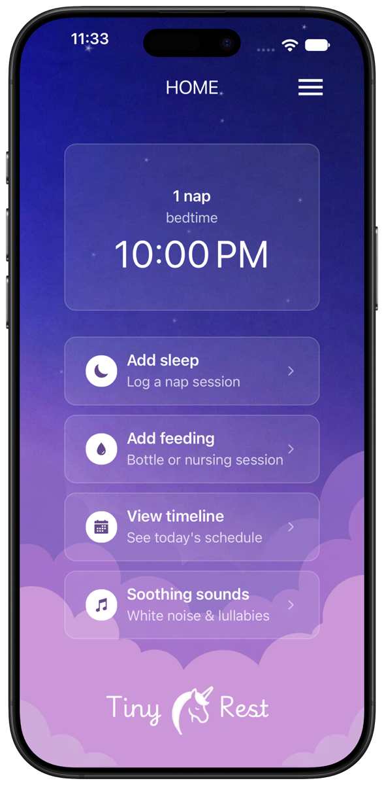
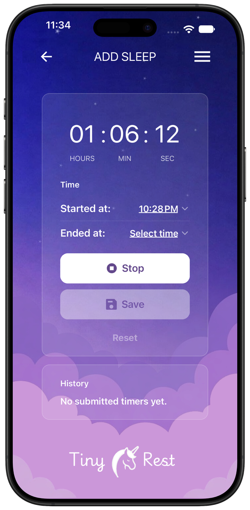
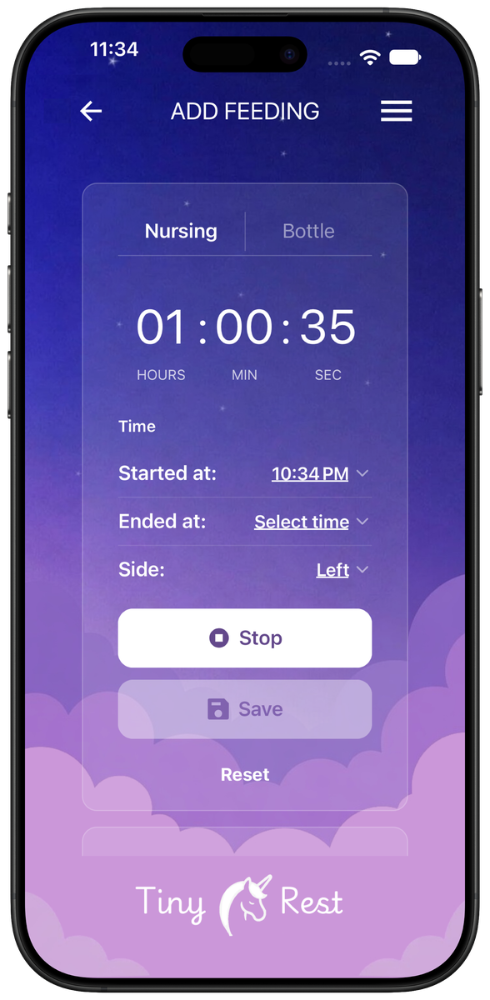
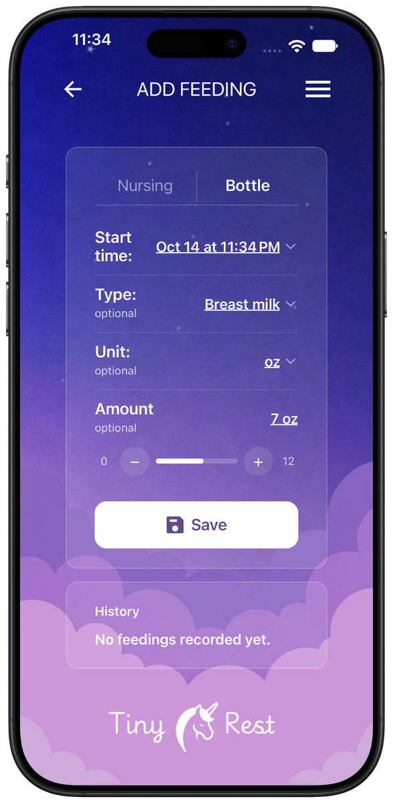
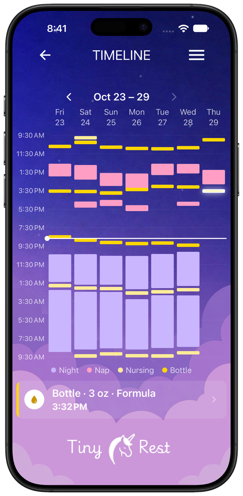
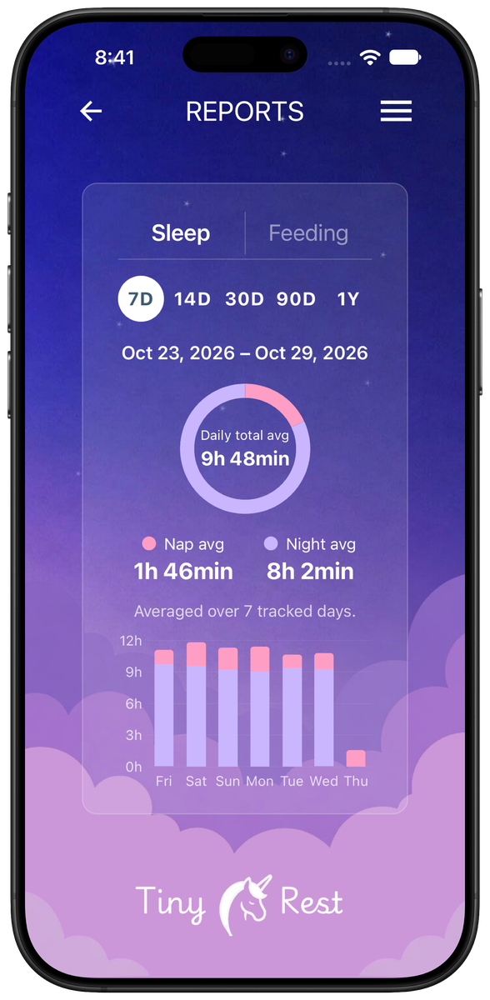
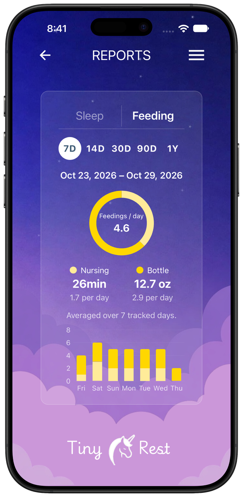
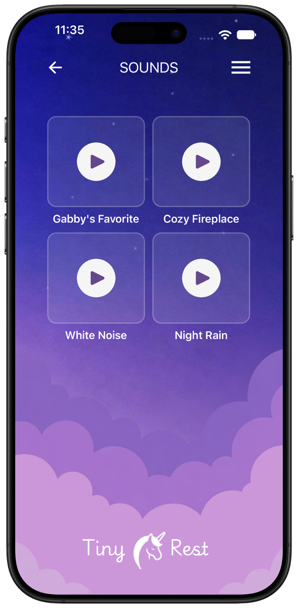
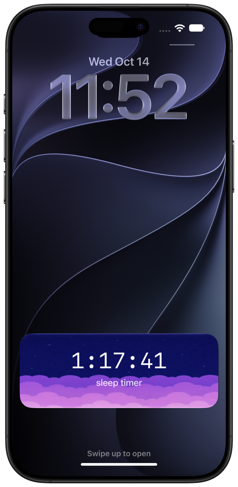
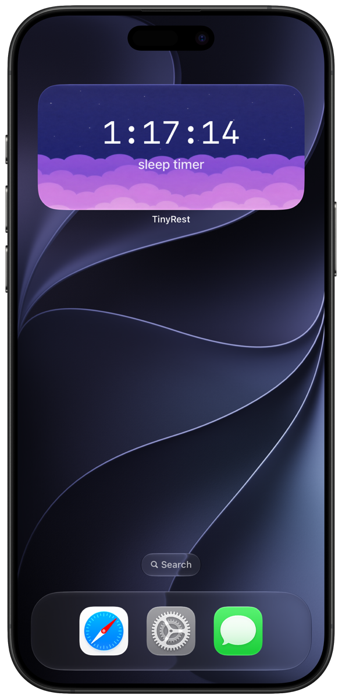

Baby sleep & feeding tracker
Better naps start with
knowing when to rest.
Tiny Rest helps you log sleep and feeding, track wake windows, and see when your little one is likely ready for their next nap — so bedtime feels less like guesswork and more like a gentle rhythm you can trust.


Next Nap
Know when the next nap is coming
The home screen tells you how many naps are left today and when your little one will likely be ready for the next one — or for bedtime — based on their recent sleep.
- Next nap or bedtime prediction
- Naps left for the day at a glance
- Add sleep, feeding, timeline and sounds one tap away
Sleep Timer
Log every nap in seconds
Start the timer when your baby falls asleep and stop it when they wake up. Forgot to tap start? Set the start and end times by hand and save the session.
- One-tap start and stop
- Edit start and end times
- Recent sessions listed in history


Feeding
Nursing and bottles, side by side with sleep
Time nursing sessions and note which side, or log a bottle with the type of milk and the amount. Feeds sit right next to naps so hunger and tiredness stay connected.
- Nursing timer with left or right side
- Bottle type, unit and amount
- Feeding history in one list

Timeline
See the whole week at a glance
Every night, nap, nursing session and bottle lands on a weekly timeline, one column per day. Spot patterns across the week and tap any entry to see its details.
- Seven days side by side, hour by hour
- Night, nap, nursing and bottle color-coded
- Tap an entry for its details


Reports
Sleep and feeding trends, in numbers
Reports turn your logs into daily averages. See how much your baby sleeps between naps and nights, how often they feed, and how each day compares across the week, month or year.
- Daily sleep average with nap and night split
- Feedings per day, nursing time and bottle amount
- 7 days, 14 days, 30 days, 90 days or a year

Soothing Sounds
Calm sounds for nap time and bedtime
Help your baby wind down with soothing sounds built right into the app — Gabby's Favorite, Cozy Fireplace, White Noise and Night Rain.
- Four soothing sounds built in
- Simple, one-tap playback
- No extra app needed


Lock Screen & Widget
The nap timer, right where you look
A running sleep timer shows up on your Lock Screen, and the Tiny Rest widget keeps it on your Home Screen — check how long your baby has been asleep without opening the app.
- Live sleep timer on the Lock Screen
- Home Screen widget
- Matches the Tiny Rest look
Calmer days start with better rest
Download Tiny Rest and take the guesswork out of nap time.